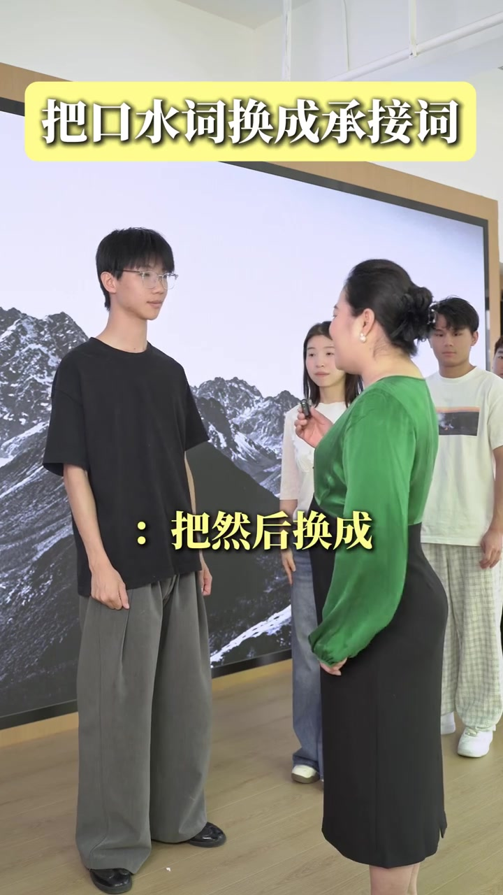
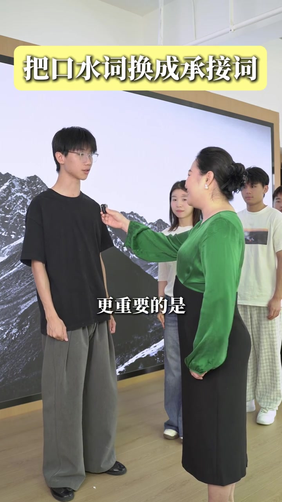
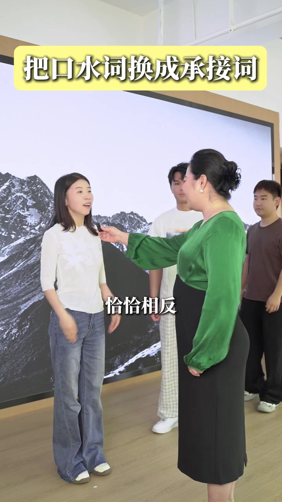
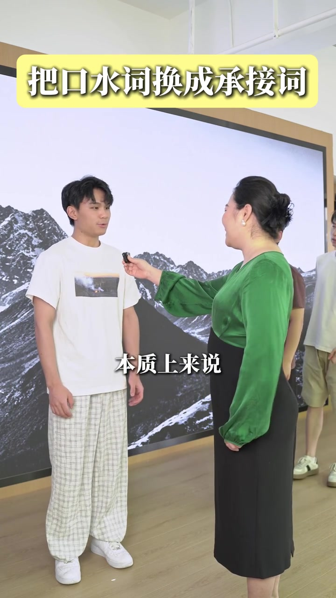
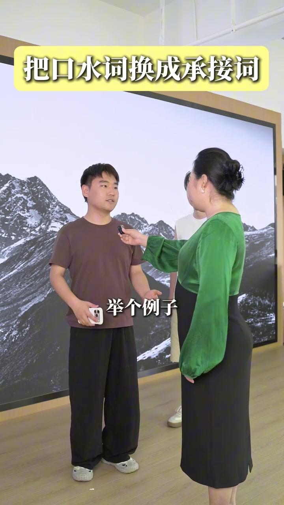

同一句口号，五轮快速替换
视频发生在一面雪山背景大屏前。教练站在右侧递麦，学员依次上场复述。画面字幕会先跳出“把××换成”，再列出几条更完整的承接说法。
说明：Whisper 固定按中文识别时，把“把然后/但是/就是/比如/其实换成”误听成“爸……换成”等音近字；下文叙事以可见字幕为准，文末转录区仍完整保留全部原始分段。
第一轮 · 00:00–00:06
第一组：把「然后」换成
开场学员是戴眼镜、穿黑衣的男生。画面先打出“把然后换成”，随后教练带着大家念出四条承接语：进一步推进、补充亮点、抬高优先级，以及旁开一层信息。
- 进一步来说：把下一层信息接上来
- 更值得一提的是：提示听众注意亮点
- 更重要的是：明确主次
- 除此之外：补上并行信息
可见字幕指令：“把然后换成”

[00:01] 第一位学员上场，黄条标题与“把然后换成”同时出现。
The first student steps up; the yellow title and “swap the 'and then'” appear together.

[00:04] 替换清单继续展开，画面出现“除此之外”等承接词。
The replacement list keeps expanding, with connectors like “apart from that” appearing.
第二轮 · 00:06–00:12
第二组：把「但是」换成
穿白上衣牛仔裤的女生走入画面。字幕切到“把但是换成”。这一轮不再只用生硬转折，而是给出对立、换视角、点出关键与问题的四种说法。
- 恰恰相反：直接翻转立场
- 换个角度看：软化冲突
- 真正的关键是：把注意力拉回要点
- 问题在于：把转折落成诊断
可见字幕指令：“把但是换成”

[00:08] 第二位学员复述“换个角度看”等转折承接语。
The second student repeats transitional lines like “looking at it from another angle.”
第三轮 · 00:12–00:18
第三组：把「就是」换成
白 T 恤格纹裤的男生接棒。字幕写明“把就是换成”。这一轮强调收束与重述：从本质、根源、换句解释到总结，都比口头禅式的“就是……”更有结构。
- 本质上来说：下沉到底层判断
- 归根结底：拉回最终原因
- 换句话来说：换表述帮助理解
- 总结一下：明确收尾
可见字幕指令：“把就是换成”

[00:14] 第三轮替换清单中出现“换句话来说”。
The third replacement list includes “in other words.”
第四轮 · 00:18–00:23
第四组：把「比如」换成
穿棕 T 恤的男生上场，手里还拿着手机。字幕切到“把比如换成”。例子本身没错，视频给出的是更具体的举例开场：举例子、标典型、打比方、拿自己说话。
- 举个例子：标准举例开场
- 最典型的情况是：强调代表性
- 打个比方：转向类比
- 拿我自己来说：用个人经验落地
可见字幕指令：“把比如换成”

[00:20] 第四轮举例承接语出现“最典型的情况是”。
The fourth round of example connectors includes “the most typical case is.”
第五轮 · 00:23–00:28
第五组：把「其实」换成
最后一位是背心短裤的男生。字幕清楚写着“把其实换成”。收尾四句都在把“其实……”这种含糊起头，改成指向核心、关键、重点或真正厉害之处。
- 核心在于
- 关键就在这里
- 重点是
- 真正厉害的是
可见字幕指令：“把其实换成”
[00:26] 最后一轮替换清单落在“核心在于”“真正厉害的是”。
The final replacement list lands on “the core is” and “what's truly impressive is.”
28 秒看完后留下什么
视频没有展开“为什么这些词更高情商”，也没有说明适用场合。它做的是一件很具体的事：把五个常见口水词各自换成四条可直接开口的承接说法，并用学员轮流复述把清单念完。